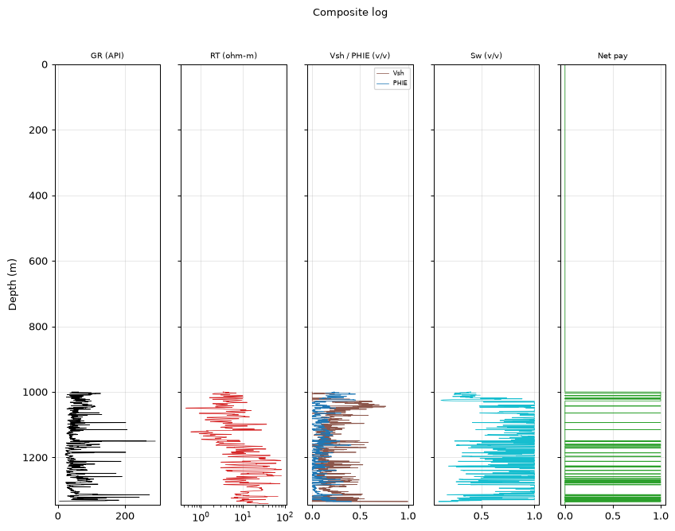
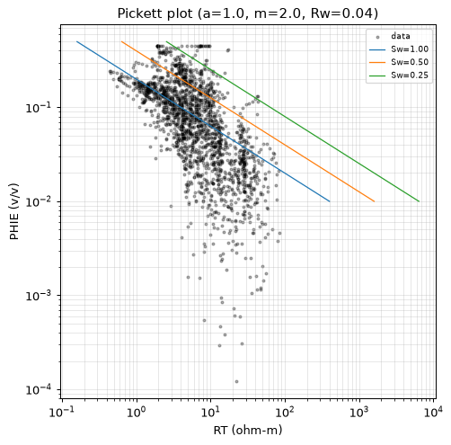
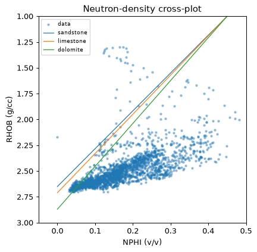
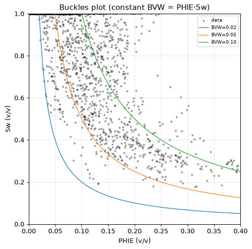
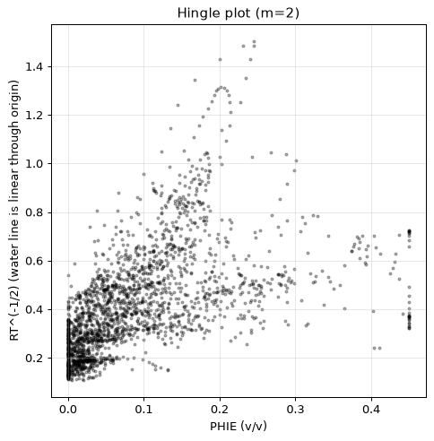
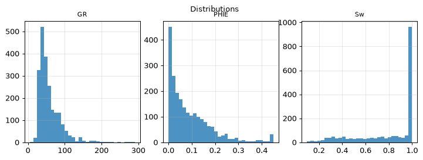
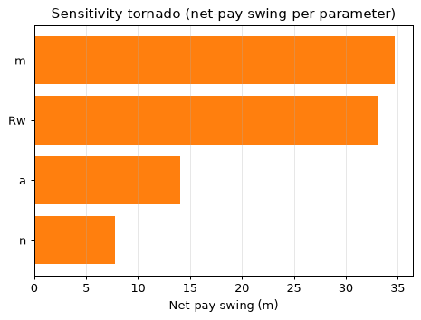
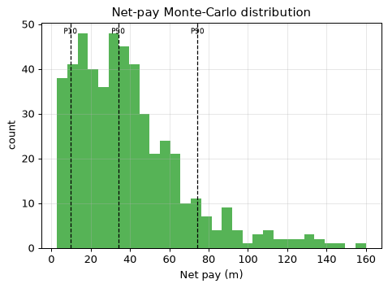

| Well (UWI) | 15-135-25982-0000 |
| Log date | 12/15/17 |
| Service company | ELI WIRELINE |
| Acquisition date (header) | 12/15/17 |
| PLSS location | Sec 31 T19S R21W (map precision ±1.6 km) |
| Larionov variant | old_rocks (degraded) |
| Convergence status | DID_NOT_CONVERGE |
| Confidence tier | ○ BRACKETED |
| Engine versions | calc_vsh 0.1.0 · calc_phie 0.1.0 · calc_sw 0.1.0 · formula_registry 0.1.0 |
| Config hash (SHA-256) | 2a9cb78728e386ab… |
| Git SHA | bd23bea18153 |
| Generated | autonomously, no human in the per-report loop |
Confidence legend. Each result is tagged by parameter provenance: ● FIRM (core-calibrated) · ◐ QUALIFIED (offset-derived) · ○ BRACKETED (regional/global default — read as a range, dominant uncertainty stated). The system does not claim *always correct*; it states how well-supported each number is.
⚠️ ABSTENTION — this is NOT a confident estimate. The run did not converge to a defensible result; the numbers below are an uncalibrated engineering estimate, reported for transparency only:
- 1 unresolved MECHANICAL objection(s)
The evaluation is restricted to the consolidated section between 1000.0 m and 1345.0 m — the interval above it is not evaluated (unconsolidated, washed-out response). Within that interval the net pay is 48.6 m with average effective porosity 0.246 and average water saturation 0.334. Monte-Carlo places the P50 net pay at 34.1 m within a P10-P90 range of 9.7 to 74.4 m. An independent SP-derived water resistivity of 0.0440 ohm-m (static SP -60.2 mV; offset-median mud-filtrate resistivity 0.110 ohm-m — a declared cross-well assumption) supports the regional default, and the Monte-Carlo Rw range is narrowed to the field SP band with recorded provenance. The Rxo/Rt movable-hydrocarbon index reads a median of 0.727 over 2221 samples — an invasion-based indicator profile, not a saturation. The run ABSTAINS from a confident estimate: the validators keep an unresolved objection, so the result must be read as a bracketed range, not a point value.
Net pay P10 / P50 / P90 = 9.7 / 34.1 / 74.4 m.
Net pay is dominated by 'm', which is a regional DEFAULT (uncalibrated). This is the single largest uncertainty — the result is bracketed, not a confident point estimate.
| Edit type | Curve | Detail |
|---|---|---|
| unit_conversion | NPHI | factor 0.01 |
| hard_range_mask | PHID_SVC | count 47 |
| hard_range_mask | RT | count 136 |
| hard_range_mask | RMED | count 442 |
| range_warn | GR | count 1 |
| range_warn | RHOB | count 42 |
| range_warn | NPHI | count 28 |
| spike_removal | — | 117 edits |
| degradation | — | 2 edits |
Raw mnemonics mapped to canonical curve names:
| Canonical | Raw mnemonic |
|---|---|
| DCAL | DCAL |
| DRHO | RHOC |
| GR | GR |
| NPHI | CNPOR |
| PHID_SVC | DPOR |
| RHOB | RHOB |
| RMED | RILM |
| RT | RILD |
| RXO | RLL3 |
| SP | SP |
Unit conversions: NPHI×0.01.
Edits applied before compute (by type): degradation: 2, hard_range_mask: 3, range_warn: 3, spike_removal: 117, unit_conversion: 1.
All numbers are produced by the deterministic, golden-tested engine. The LLM only selects methods/parameters and writes prose — it never computes a number. Figures are deterministic renderings of these computed numbers for the human reader; the agent reasons over the numeric EDA digest, not images (the models have no vision).
| Step | Method (frozen) | Version |
|---|---|---|
| Vsh | 2-mineral volumetric solve (matrix+clay+porosity from RHOB+NPHI) | vsh_multimineral 0.1.0 |
| PHIE | Density-neutron crossplot, shale-corrected | phie_density_neutron 0.1.0 |
| Sw | Archie 1942 | sw_archie 0.1.0 |
| Net pay | Vsh/PHIE/Sw cutoffs → net sand → net reservoir → net pay | netpay 0.1.0 |
| Uncertainty | Monte Carlo P10/P50/P90 + parameter sensitivity | mc 0.1.0 |
Low-resistivity scan: rt_threshold=1.25, n_flagged=858, intervals=[[0.0, 0.2], [101.0, 102.3], [218.1, 219.2], [243.7, 245.4], [289.7, 291.5], [293.4, 354.6], [359.1, 364.2], [383.0, 383.7], [416.5, 417.6], [419.3, 419.7]].
Invasion profile (multi-depth resistivities, 8575 samples): fraction with shallow reading above deep (Rxo/RT > 1.2, invaded/permeable indication): 0.710; reversed (< 0.8): 0.072; median Rxo/RT 1.462; median Rmed/RT 0.996. Raw-curve facts; naming moveable hydrocarbon is the analyst's judgement.
Matrix point-shares (fraction of points near each matrix line): sandstone: 0.075, limestone: 0.14, dolomite: 0.095. Engine crossplot output; naming the dominant lithology is the analyst's judgement. Comparison with core/mud log: not available (LAS-only).
Composite log

Pickett plot

Neutron-density crossplot

Buckles plot

Hingle plot

Distributions

Sensitivity tornado

Net-pay Monte-Carlo distribution

Mean Vsh by method (selection is the agent's; the LLM authors no number):
| Method | Mean Vsh | Selected |
|---|---|---|
| vsh_larionov_old | 0.252 | |
| vsh_larionov_tertiary | 0.185 | |
| vsh_linear | 0.359 | |
| vsh_clavier | 0.238 | |
| vsh_steiber | 0.207 | |
| vsh_neutron_density | 0.210 | |
| vsh_multimineral | 0.200 | ✓ |
Mean porosity by method (effective where shale-corrected; the LLM authors no number):
| Method | Mean porosity | Selected |
|---|---|---|
| phie_density_neutron | 0.105 | ✓ |
| phi_density | 0.127 | |
| phi_neutron | 0.169 |
Service-company porosity curves (cross-check evidence, full-column means): phid_svc: 0.445. Matrix assumptions differ per curve; agreement/disagreement is the analyst's reading.
Mean Sw (Archie 1942) = 0.798 (a=1.00, m=2.00, n=2.00, Rw=0.0278 ohm-m). Electrical parameters are engine-sourced; alternative Sw models are optional sections.
Mean Sw by method (engine-computed comparison; the LLM authors no number):
| Method | Mean Sw | Selected |
|---|---|---|
| sw_archie | 0.798 | ✓ |
| sw_simandoux | 0.630 | |
| sw_indonesia | 0.680 |
Raw net-pay runs merged into 30 intervals (gap tolerance 1.5 m); showing the 15 thickest, depth-ordered. Full set traces in the ledger.
| Interval | Top (m) | Base (m) | Net pay (m) | Avg PHIE | Avg Sw | Avg Vsh |
|---|---|---|---|---|---|---|
| Z1 | 1000.0 | 1018.0 | 16.2 | 0.268 | 0.348 | 0.008 |
| Z2 | 1022.5 | 1027.6 | 5.3 | 0.408 | 0.196 | 0.002 |
| Z3 | 1149.6 | 1151.8 | 1.5 | 0.229 | 0.363 | 0.199 |
| Z4 | 1161.7 | 1163.4 | 1.8 | 0.342 | 0.313 | 0.053 |
| Z5 | 1170.9 | 1171.7 | 0.9 | 0.126 | 0.423 | 0.067 |
| Z6 | 1196.0 | 1198.0 | 2.1 | 0.179 | 0.390 | 0.082 |
| Z7 | 1225.6 | 1226.5 | 1.1 | 0.119 | 0.230 | 0.202 |
| Z8 | 1238.9 | 1240.1 | 1.4 | 0.227 | 0.351 | 0.099 |
| Z9 | 1266.4 | 1268.1 | 1.8 | 0.270 | 0.321 | 0.192 |
| Z10 | 1273.6 | 1277.6 | 2.0 | 0.197 | 0.386 | 0.195 |
| Z11 | 1281.7 | 1283.5 | 1.2 | 0.228 | 0.359 | 0.240 |
| Z12 | 1313.2 | 1314.1 | 1.1 | 0.269 | 0.224 | 0.258 |
| Z13 | 1316.7 | 1317.8 | 1.2 | 0.134 | 0.355 | 0.080 |
| Z14 | 1321.5 | 1324.8 | 1.5 | 0.186 | 0.356 | 0.224 |
| Z15 | 1329.7 | 1334.7 | 3.8 | 0.191 | 0.302 | 0.131 |
| Quantity | Value |
|---|---|
| Gross interval | 345.0 m |
| Net pay (P10/P50/P90) | 9.7 / 34.1 / 74.4 m |
| Net-to-gross | 0.141 |
| Avg PHIE (net pay) | 0.246 |
| Avg Sw (net pay) | 0.334 |
| Avg Vsh (net pay) | 0.086 |
Monte Carlo, 500 realizations (seed 42). Net pay swing per parameter (one-at-a-time):
| Parameter | Net-pay swing (m) |
|---|---|
| m | 34.7 |
| Rw | 33.1 |
| a | 14.0 |
| n | 7.8 |
Dominant uncertainty: m (swing 34.7 m).
Multi-seed robustness: P50 UNSTABLE across seeds (spread 4.3 m across 4 seeds).
Net pay is dominated by 'm', which is a regional DEFAULT (uncalibrated). This is the single largest uncertainty — the result is bracketed, not a confident point estimate.
| Parameter | Value | Unit | Provenance | Source |
|---|---|---|---|---|
| gr_min | 20.000 | API | default | — |
| gr_max | 120.000 | API | default | — |
| rho_ma | 2.710 | g/cc | default | Schlumberger 1989 |
| rho_fl | 1.000 | g/cc | default | — |
| phie_max | 0.450 | v/v | default | — |
| phi_sh_d | 0.100 | v/v | default | — |
| phi_sh_n | 0.350 | v/v | default | — |
| a | 1.000 | - | default | Winsauer et al. 1952 |
| m | 2.000 | - | default | Archie, G.E. 1942 |
| n | 2.000 | - | default | Archie, G.E. 1942 |
| Rw | 0.040 | ohm-m | default | Kansas Geological Survey 2000 |
| rt_hydrocarbon_floor | 5.000 | ohm-m | default | — |
| vsh_cutoff | 0.350 | v/v | default | — |
| phie_cutoff | 0.100 | v/v | default | — |
| sw_cutoff | 0.500 | v/v | default | — |
| bit_size_config | 7.875 | in | default | — |
| qc_abort_threshold | 0.800 | - | default | — |
| circuit_breaker_n | 3.000 | - | default | — |
The citations table (not RAG) gives each cited parameter exactly one frozen source. Parameters tagged
defaultare regional/global — they drive the bracketed tier.
Boundary-inclusive criteria applied by the engine (netpay) to flag reservoir:
| Stage | Criterion | Cutoff | Provenance |
|---|---|---|---|
| Net sand | Vsh ≤ cutoff | 0.350 | default |
| Net reservoir | + PHIE ≥ cutoff | 0.100 | default |
| Net pay | + Sw ≤ cutoff | 0.500 | default |
Cutoff values are engine parameters (never LLM-authored); the dominant net-pay uncertainty is m — see Uncertainty for the swing.
Curve provenance (canonical ← raw mnemonic): DCAL←DCAL, DRHO←RHOC, GR←GR, NPHI←CNPOR, PHID_SVC←DPOR, RHOB←RHOB, RMED←RILM, RT←RILD, RXO←RLL3, SP←SP.
QC edits applied before compute — degradation: 2, hard_range_mask: 3, range_warn: 3, spike_removal: 117, unit_conversion: 1.
| Validator | Type | Detail |
|---|---|---|
| vsh_phie_anticorrelation | support | Vsh-PHIE Pearson 0.95 > 0.3 (dirty rock + high porosity) |
| rt_sw_consistency | mechanical | 122 depths with Sw<0.4 but RT<5.0 ohm-m |
flowchart TD
dec_1["decision: step: set_zone_of_interest"]
act_1["tool_call: set_zone_of_interest"]
dec_2["decision: step: compare_methods"]
act_2["tool_call: compare_methods"]
dec_3["decision: step: compute_vsh"]
act_3["tool_call: compute_vsh"]
dec_4["decision: step: compute_phie"]
act_4["tool_call: compute_phie"]
dec_5["decision: step: compare_methods"]
act_5["tool_call: compare_methods"]
dec_6["decision: step: compute_sw"]
act_6["tool_call: compute_sw"]
dec_7["decision: step: apply_cutoffs"]
act_7["tool_call: apply_cutoffs"]
dec_8["decision: step: run_uncertainty"]
act_8["tool_call: run_uncertainty"]
dec_9["decision: step: derived_parameters"]
act_9["tool_call: derived_parameters"]
dec_10["decision: step: lithology"]
act_10["tool_call: lithology"]This is a LAS-only study. Data that would calibrate the interpretation is absent:
Malformed short UWI in header (declared). From 1000 m (2.49). N-D clay ~0.08 -> Archie. Method choices were made against the engine's numeric comparisons, not by preference; the comparison tables show the rejected alternatives beside the selected method. All numbers in this report come from the deterministic engine; the analyst chose the interval, the methods and the analyses, and wrote this prose — nothing more. Remaining uncertainty is dominated by the uncalibrated regional parameters.
{
"net_pay_total_m": 48.61560000000003,
"net_pay_p10_p50_p90": [
9.738360000000007,
34.06140000000002,
74.38644000000005
],
"driving_params": {
"a": 1.0,
"m": 2.0,
"n": 2.0,
"Rw": 0.04
},
"claim_verifier": {
"result": "PASS",
"flags": [],
"tone_flags": []
}
}| Item | Present |
|---|---|
| QC edits recorded before compute | ✓ |
| Every number ledger-traced | ✓ |
| Confidence tier on the run | ✓ |
| Parameter citations frozen | ✓ |
| Validator objections listed, not hidden | ✓ |
| Uncertainty propagated (Monte Carlo) | ✓ |
| Claim verifier run on prose | ✓ |